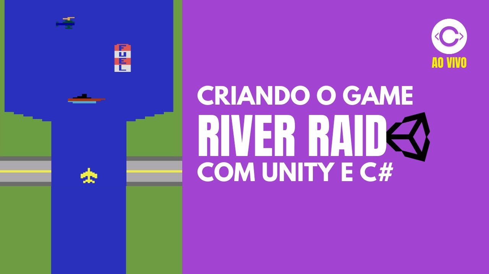

30:07
30:07
Aprenda Python AGORA com esse vídeo
Codi Academy • 1,2 mi visualizações • há 2 dias
 05:07
05:07
Entenda oque são chamados NFTs
Codi Academy • 70 visualizações • há 1 hora atrás

2:23:56
Aulão | Criando game River Raid na Unity
Codi Academy • 300 visualizações • Ao-vivo
 1:03:00
1:03:00
Recriando o Aplicativo Doulingo com HTML, CSS e JS
Codi Academy • 250 visualizações • há 4 semanas atrás
 1:02:06
1:02:06
Criando uma Tela de Login com HTML E CSS
Codi Academy • 400 visualizações • há 3 dias atrás
 50:23
50:23
Criando um game de plataforma com HTML, CSS e JS
Codi Academy • 1.230 visualizações • há 2 messes atrás
 1:30:28
1:30:28
Recriando um Game Street Fighter 2 no Construct 2
Codi Academy• 3.036 mil visualizações • há 4 messes atrás
 1:04:45
1:04:45
Aprenda Pixel Art em apenas 1 hora com o Piskel
Codi Academy • 1.345 mil visualizações • há 4 messes atás